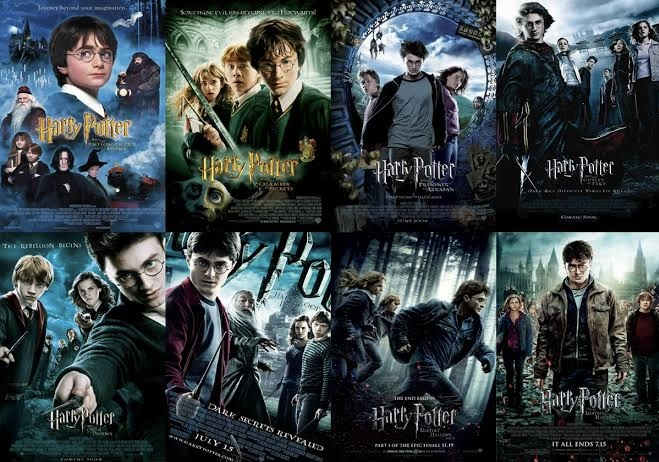

Harry Potter merupakan
serangkaian 7 seri novel dengan genre fantasi yang dikarang oleh seorang penulis
Inggris bernama J. K. Rowling. Ide tentang Harry Potter pertama kali tercetus
dalam pikiran J. K. Rowling ketika menaiki kereta api dari Manchester ke London
pada tahun 1990. J. K. Rowling yang pada saat itu merupakan seorang single-
parent sempat mengalami kesulitan dalam hidup kemudian mengambil inisiatif
untuk menjadikan Harry Potter sebagai inspirasi hidupnya.

Seri novel Harry Potter:
1. Harry Potter and the Philosopher's Stone (1995),
2. Harry Potter and The Chamber of Secrets (1998),
3. Harry Potter and The Prisoner of Azkaban (1999),
4. Harry Potter and The Goblet of Fire (2000),
5. Harry Potter and The Order of the Phoenix (2003),
6. Harry Potter and The Half-Blood Prince (2005),
7. Harry Potter and The Deathly Hallows (2007).
Dalam artikel yang bertajuk Fenomena Buku Harry Potter, di seluruh dunia, seri Harry Potter sudah laku 200 juta eksemplar dalam 60 bahasa. Kemudian dibuatlah seri film Harry Potter dari 1 sampai 7 part 2 yang rilis selama 10 tahun dari tahun 2001 hingga 2011. Seri filmnya sendiri mendapat penghargaan dan menjadi salah satu fim sekuel idola di seluruh dunia. Di Indonesia sendiri, Harry Potter muncul pertama kali masuk dengan seri buku pertamanya pada 30 Juni 1997. Menyusul seri-seri berikutnya setelah itu beserta sekuel dan prekuelnya. Setelah bukunya laris di pasar Indonesia, masuklah seri film Harry Potter ke Indonesia beserta prekuelnya. Harry Potter di Indonesia disambut dengan baik. Antusiasme penggemar Harry Potter nampak tatkala setiap seri dari novel atau filmnya terbit di Indonesia.